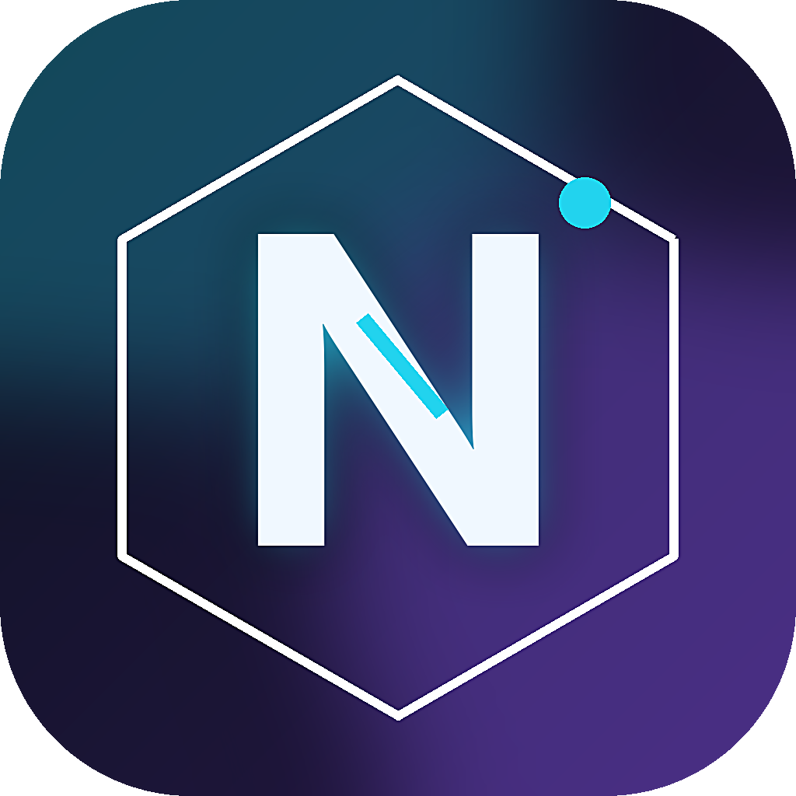
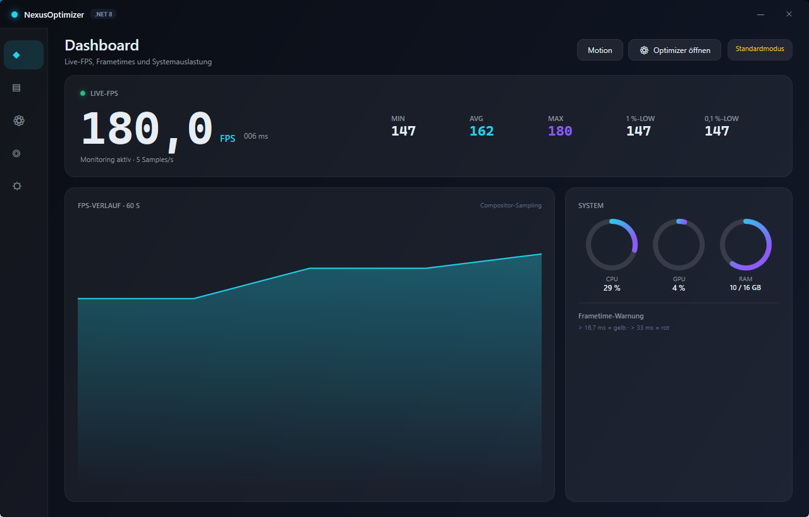
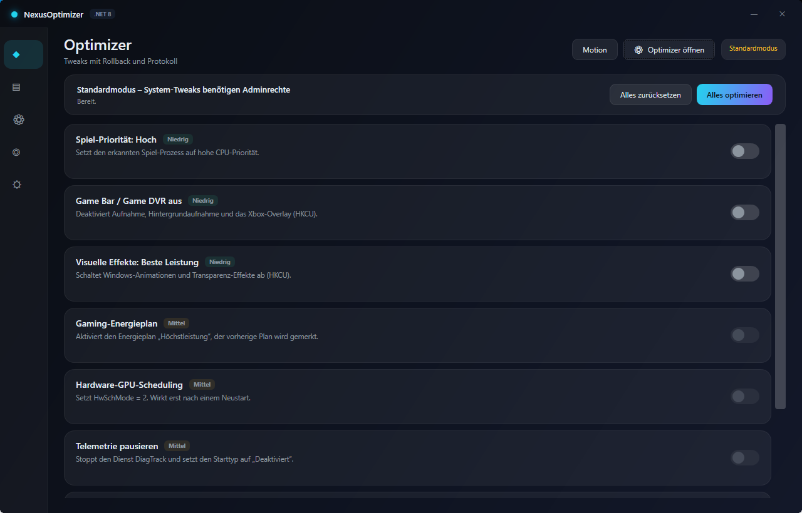
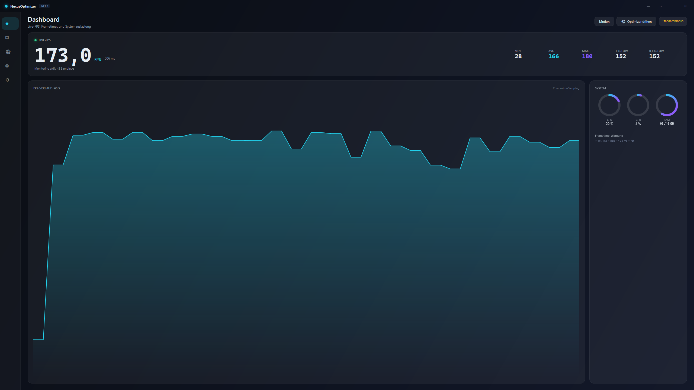

MIN / AVG / MAX plus 1 % and 0.1 %-lows computed from real frame times — no guessed numbers.
CPU, GPU and RAM sampled on a background thread and rendered as animated ring charts.
Eight Windows tweaks with risk badges, apply-all / reset-all and a SQLite change log.
Central tokens, easing curves and interruptible animations — built for 60 fps, not for bling.
Borderless fullscreen with F11 / Esc, custom chrome, hover-expanding sidebar.
No admin prompt, no crashes on missing rights, documented limitations instead of fake data.

